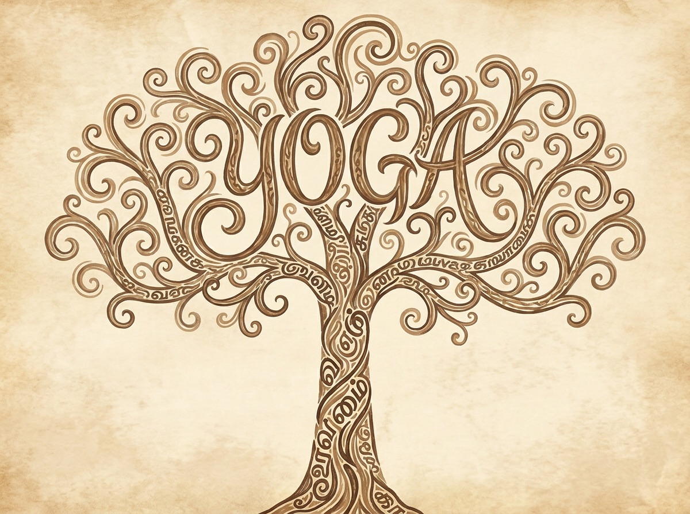
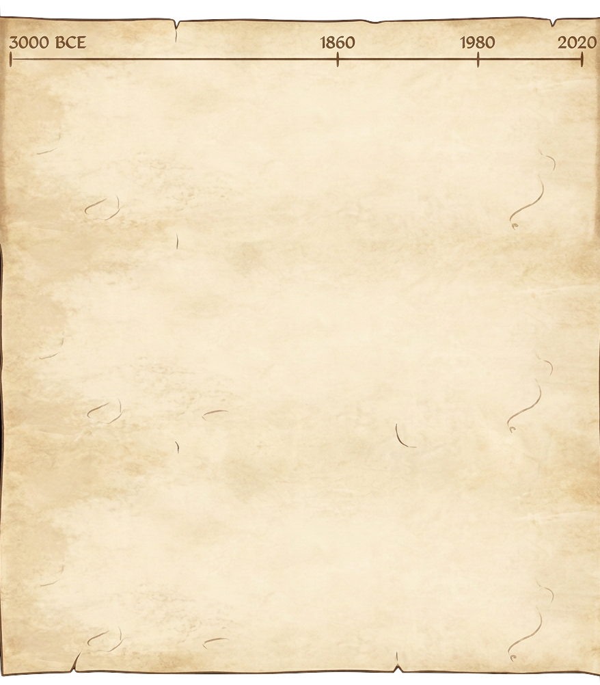

isAtman is Brahman. The word “is” sits on the crown of the tree, and an arrow falls from it into the word YOGA lettered in the canopy — yuj, to yoke, to harness. Both are drawn faintly, on purpose: they are there if you hold your attention on them, which is itself the sixth limb, dharana. The whole page is a yoga lesson.
